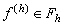
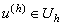
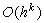

|
При численном решении дифференциальных уравнений
неизбежно возникают ошибки, приводящие к некоторому отличию результатов численного
решения от истинных значений искомой функции, причём существует два типа источников этих
ошибок. Как уже отмечалось в разделе "Понятие порядка аппроксимации", одним источником
ошибок является сама аппроксимация, т.е. замена производных в исходных дифференциальных
уравнениях конечными разностями. Другой источник ошибок связан с погрешностью вычислений.
Ошибки могут возникать при неточности вычислений как самой разностной схемы, так и
начальных и граничных условий. В зависимости от особенностей вычислительного алгоритма эти
ошибки в процессе расчёта могут затухать или возрастать. Если они не возрастают, то говорят,
что разностная схема устойчива, если же возрастают, то - неустойчива.
Тогда разностную схему кратко можно представить в следующем виде:
Теорема 1. Разностная схема (3.2) с линейным оператором Lh устойчива, если при любом  уравнение (3.2) имеет единственное решение , причём
Теорема 2. Пусть разностная схема (3.2) аппроксимирует дифференциальное уравнение (3.1) с порядком аппроксимации  и является устойчивой. Тогда решение разностной задачи (3.2) u(h) сходится к решению исходной дифференциальной задачи (3.1) [u]h и имеет место неравенство:
Таким образом, сходимость решения разностной схемы к решению исходного уравнения имеет место только при выполнении двух требований: 1. разностная схема должна аппроксимировать исходное уравнение; 2. разностная схема должна быть устойчива. |